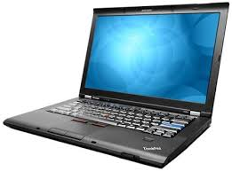
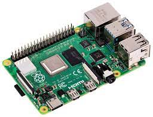

| Machine A |
Machine B |
| The git repo is or will be cloned on this machine, the build will happen on this one. |
No git repo here, only parts required at runtime will be available here. |
|  |
 |
Make sure you got git and the right version of java |
On a new image, install the right version of Java, and librxtx-java |
| Clone the repo | |
| Build the Project | |
| Package it for Production, create an archive | |
Send the archive to the Raspberry Pi (using scp) |
|
|
| Unzip the received archive |
| Plug in the GPS, link the serial port, and give it a try ! ./mux.sh nmea.mux.gps.yaml. |
| Finally, you can setup the Raspberry Pi to start everything at boot, in /etc/rc.local, and a HotSpot. |